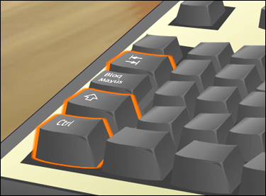

 |
|
Las dificultades de navegación, a consecuencia de minusvalías de este tipo, vienen ocasionadas por la incapacidad de usar el ratón con la precisión necesaria. Aunque los sistemas operativos más populares en estos días, traen por defecto la opción de mover el cursor, con las flechas del panel numérico el simulador incluye un sofisticado sistema de tabulación con el que se puede acceder a cualquier sitio, y por otro lado, los botones y funciones más importantes pueden ser seleccionados o ejecutados con un acceso directo de teclado. |